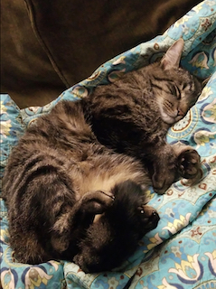
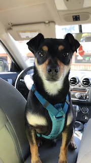

Dane Beatie, International Man of Mystery
Hello everyone! My name is Dane Beatie, I am a first-year MLIS student, but with a background in Late Byzantine history. This is a picture of my cat, Calliope. Say hi, Calliope!

Lou Havstad
Hi! I'm a first year MLIS student interested in media archives. You can visit my personal site here! This is my cat, Pelt.
Emily Holt
Hi! I'm a first year MLIS student in archival studies. My historical focus is Florentine politics and Greek antiquity. Here is a photo of my dog, Chewy.
Meilin Qu
I'm a first year Masters of Fine Art student from Design | Media Art.
I'm an image maker, curnarrator and writer, focusing on the social and instrumentalized role of epistemological tools, sound and latent digitality.
This was my hamster MieMie. She was an angel.